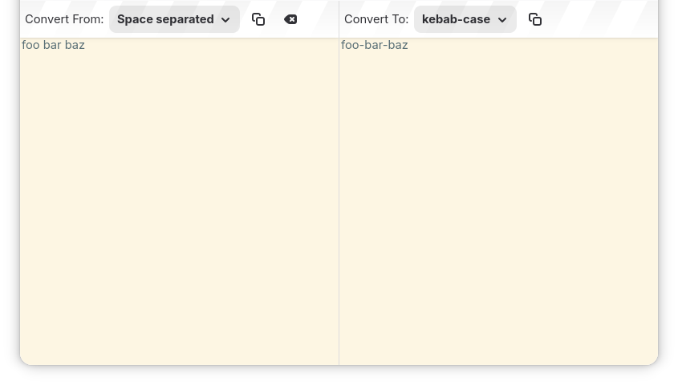

| Top |
void
kc_main_view_swap (KcMainView *self);
Swaps values of “case-type” and “text” between input and output.
typedef struct _KcMainView KcMainView;
The main content of the app window.
It contains two panes; Input Pane at the start and Output Pane at the end. Both consists of a KcToolBar and a KcTextArea.
Input Pane aims to receive user input to convert, so text in its KcTextArea is editable and also its KcToolBar contains a button to clear text in its KcTextArea. On the other hand, Output Pane aims to print conversion result, so text in its KcTextArea is not editable.
